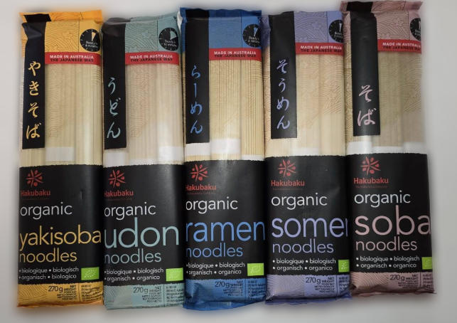
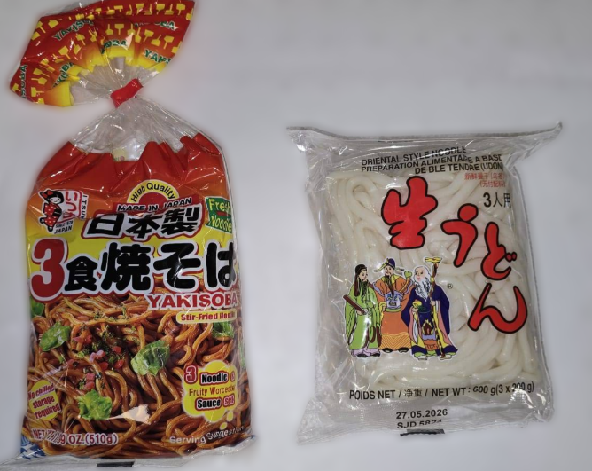
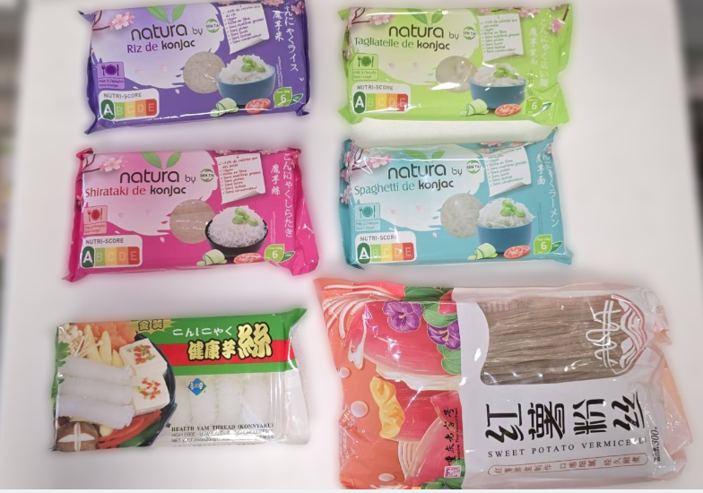
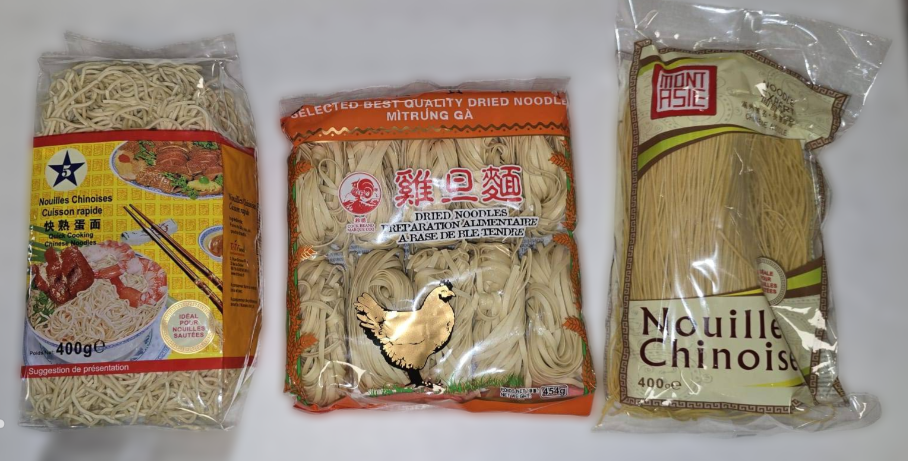
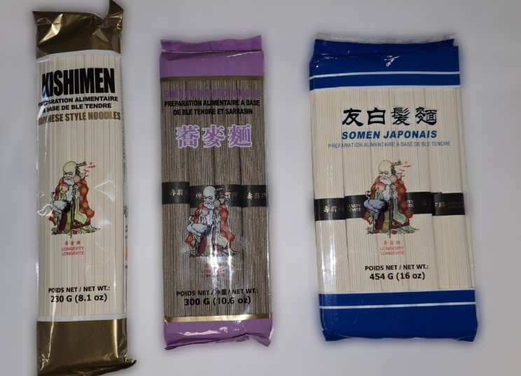
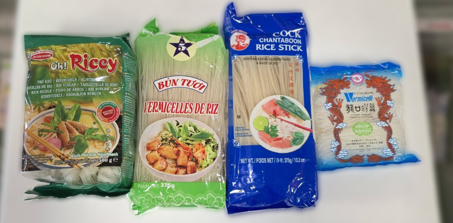

Rayon Nouilles Fraiches
Les produits du rayon nouilles fraiches les plus achetés

Nouilles japonaises – Un grand choix de nouilles japonaises s'offre à vous pour préparer des udons, des ramens ou encore des sobas !
Nouilles épaisses – Choississez entre des nouilles épaisses avec leur assaisonement et ceux sans pour libérer votre créativité !
Nouilles et riz – De konjac et patates douces.
Nouilles de blé – Larges et fines.
Somen, kishimen et nouilles de sarasin
Nouilles de riz – Nouilles de riz et vermisselles, faites votre choix !